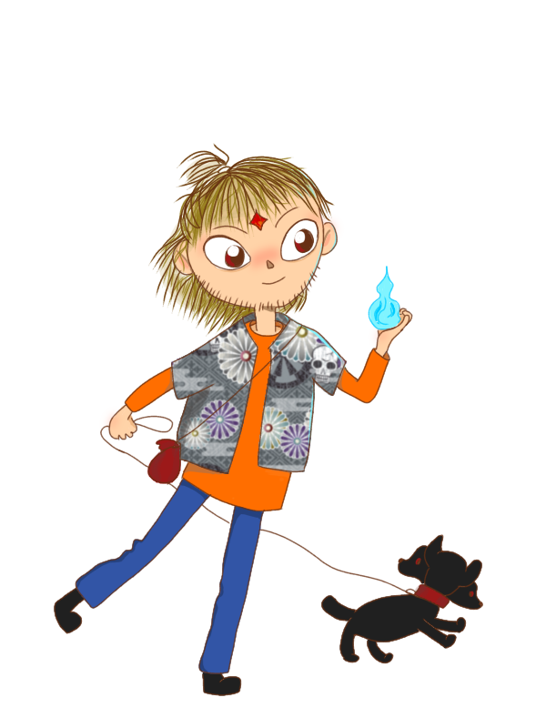

Byodoin
Byodo (平等王), was born with Enma as mother, while all his older brothers had Enma as father. Due to that and also because he didn’t have any particular task to do, Byodoin decided that his task is to fight all his older brothers and took over their domains. From the very young age he challenges all his brothers, but was rarely able to win. He had the closest relationship to Toshi, but after Toshi found his life’s work and got married they grew apart. Byodoin has blond hair and stubble, trying very hard to look and sound masculine all the time. Despite his chaotic personality, all his eight older brothers love Byodoin and are ready to do almost anything to keep him happy.